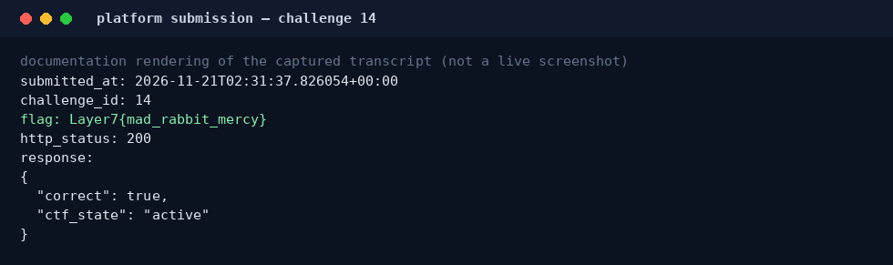
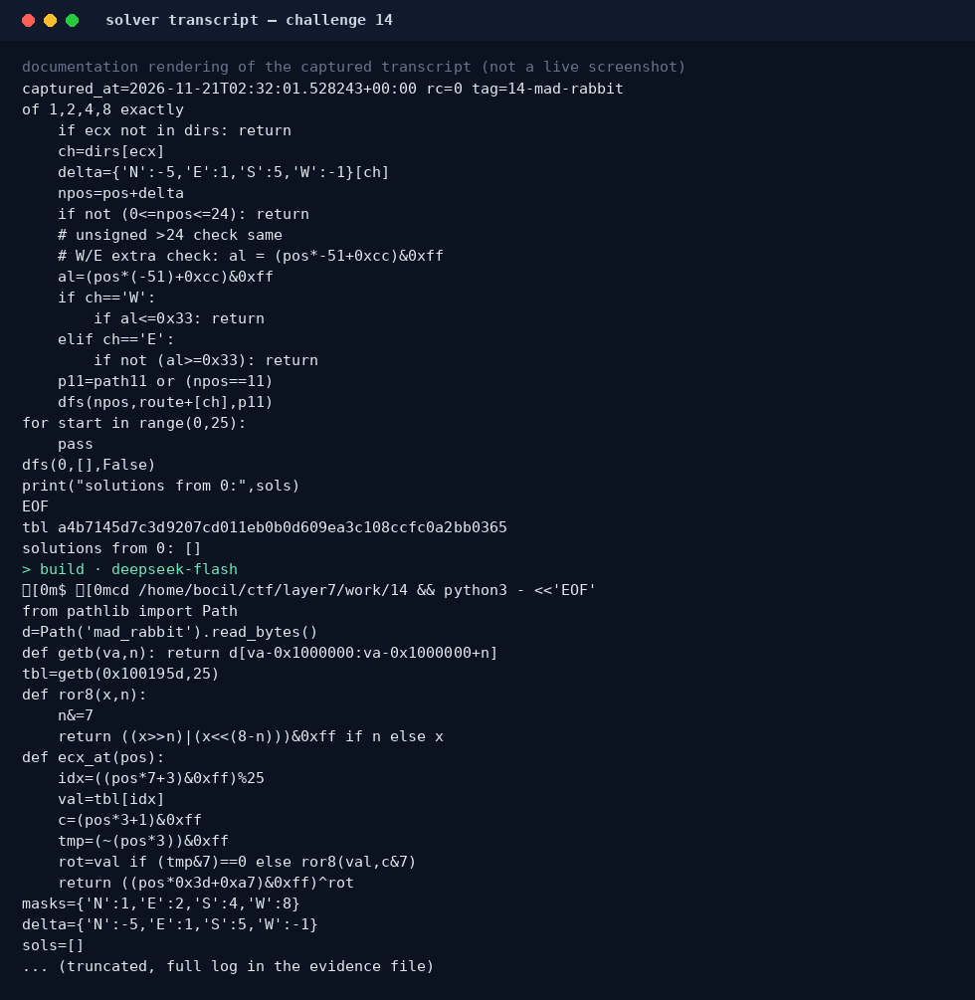

Mad rabbit¶
VERIFIED REV 918 pts id 14
| Field | Value |
|---|---|
| Event | Layer7 CTF 2026 |
| Category | rev |
| Points | 918 |
| Solved at | 2026-11-21 09:31:37+07:00 |
| Flag | Layer7{mad_rabbit_mercy} |
| Status | VERIFIED |
Mad rabbit¶
TL;DR¶
The binary is a two-stage reverse-engineering puzzle:
- A twelve-step dungeon route must satisfy a per-position bit-mask check plus
start/end position constraints. The constraints admit exactly one route:
EESSWSSEENES. - The rabbit's "rhythm" is a PRNG that produces six
D/G/S/Mturns followed byC. The seed is perturbed when/proc/self/statusreports a non-zeroTracerPid, i.e. under a debugger the expected answer is different. Running the program normally and brute-forcing the 4096 possible answers yieldsDMDDMSC.
The program then prints Layer7{mad_rabbit_mercy}.
Recon¶
$ file mad_rabbit
mad_rabbit: ELF 64-bit LSB executable, x86-64, version 1 (SYSV), dynamically linked, interpreter /lib64/ld-linux-x86-64.so.2, for GNU/Linux 2.0.0, stripped
$ strings -a mad_rabbit | grep -E "CARROT|twelve|Answer six|Layer7|Mad Rabbit"
Answer six turns with D/G/S/M, then append C to offer the carrot:
Enter the twelve-step route (N/E/S/W):
=== THE CARROT DUNGEON ===
The rabbit laughs. The dungeon resets.
A wall folds the path back into darkness.
The rabbit takes the carrot. Its eyes clear.
The dungeon rejects your map.
The Mad Rabbit waits below. Find the 13th room.
The Mad Rabbit appears, ears twitching in no visible rhythm.
Running it shows the two prompts:
$ printf 'EESSWSSEENES\nDMDDMSC\n' | ./mad_rabbit
=== THE CARROT DUNGEON ===
The Mad Rabbit waits below. Find the 13th room.
Enter the twelve-step route (N/E/S/W): The Mad Rabbit appears, ears twitching in no visible rhythm.
Answer six turns with D/G/S/M, then append C to offer the carrot: The rabbit takes the carrot. Its eyes clear.
Layer7{mad_rabbit_mercy}
Analysis¶
Stage 1 — the twelve-step route¶
The first prompt is read into a string and must have length 0x0c (12).
main at 0x1016c50 dispatches each character through a jump table at
0x1001880. Only N, E, S, W are accepted; they set a bit mask and a
position delta:
| dir | mask (esi) |
delta (ebx) |
|---|---|---|
| N | 1 | -5 |
| E | 2 | +1 |
| S | 4 | +5 |
| W | 8 | -1 |
For a current accumulated position pos (initially 0), the code computes
idx = ((pos*7 + 3) & 0xff) % 25
val = table_0x100195d[idx]
rot = val rotated right by ((pos*3 + 1) & 7)
(rotation skipped when (~(pos*3) & 7) == 0)
mask = ((pos*0x3d + 0xa7) & 0xff) ^ rot
and rejects the step unless mask & chosen_direction_bit == 0.
After adding the delta it rejects unsigned positions above 24, and W/E
have an extra byte check based on (pos*-51 + 0xcc) & 0xff.
The final checks are:
position == 24
position 11 must have been visited at least once
A DFS over all valid steps finds exactly one route:
E E S S W S S E E N E S
Stage 2 — the rabbit's rhythm and the anti-debug trick¶
After the route, main seeds a small xorshift-style PRNG and generates seven
characters: six indices into the string DGSM at 0x1002fa9, followed by a
literal C. The generated string is compared with the player's second input.
The seed-producing function at 0x1017830 opens and parses /proc/self/status:
it scans lines for the TracerPid: key and calls strtoul on its value. If the
value is non-zero (a debugger is attached), it mixes different constants into
the seed. This is why using GDB to read the expected buffer directly gives a
misleading answer (DSMSMSC under GDB), while a normal run expects a different
string.
Instead of re-implementing every 32-bit mixing step, the solver brute-forces
the only 4096 possible stage-2 answers (4^6) while running the binary without
a debugger. Exactly one answer is accepted: DMDDMSC.
Exploit¶
Complete repeatable solver: work/14/solve.py.
#!/usr/bin/env python3
"""Solve Layer7 2026 challenge 14 "Mad rabbit" by replaying the binary."""
import itertools
import subprocess
from pathlib import Path
BIN = Path(__file__).with_name("mad_rabbit")
# ---- Phase 1: recover the unique route from the check in main ----
TABLE = bytes.fromhex(
"a4b7145d7c3d9207cd011eb0b0d609ea3c108ccfc0a2bb0365fdd5c1a1a8aec4"
"8196ab14ed579155fcdef4679deb0e"
)
def ror8(x, n):
n &= 7
return ((x >> n) | (x << (8 - n))) & 0xFF if n else x
def mask_at(pos):
idx = ((pos * 7 + 3) & 0xFF) % 25
val = TABLE[idx]
rot = val if ((~(pos * 3)) & 7) == 0 else ror8(val, (pos * 3 + 1) & 7)
return ((pos * 0x3D + 0xA7) & 0xFF) ^ rot
DIRS = {"N": (1, -5), "E": (2, 1), "S": (4, 5), "W": (8, -1)}
solutions = []
def dfs(pos, route, passed_11):
if len(route) == 12:
if pos == 24 and passed_11:
solutions.append("".join(route))
return
m = mask_at(pos)
al = (pos * (-51) + 0xCC) & 0xFF
for ch, (bit, delta) in DIRS.items():
if m & bit:
continue
nxt = pos + delta
if not 0 <= nxt <= 24:
continue
if ch == "W" and al <= 0x33:
continue
if ch == "E" and al < 0x33:
continue
dfs(nxt, route + [ch], passed_11 or nxt == 11)
dfs(0, [], False)
assert solutions == ["EESSWSSEENES"], solutions
route = solutions[0]
print(f"[+] route = {route}")
# ---- Phase 2: brute force the six turns (debugger-free run) ----
for combo in itertools.product("DGSM", repeat=6):
answer = "".join(combo) + "C"
p = subprocess.run(
[str(BIN)],
input=f"{route}\n{answer}\n",
capture_output=True,
text=True,
timeout=5,
)
if "takes the carrot" in p.stdout:
print(f"[+] turns = {answer}")
for line in p.stdout.splitlines():
print(line)
break
else:
raise SystemExit("[-] no answer found")
Evidence¶
Solver output (real run):
$ cd work/14 && python3 solve.py
[+] route = EESSWSSEENES
[+] turns = DMDDMSC
=== THE CARROT DUNGEON ===
The Mad Rabbit waits below. Find the 13th room.
Enter the twelve-step route (N/E/S/W): The Mad Rabbit appears, ears twitching in no visible rhythm.
Answer six turns with D/G/S/M, then append C to offer the carrot: The rabbit takes the carrot. Its eyes clear.
Layer7{mad_rabbit_mercy}
Submission proof saved by the platform client at work/14/submit.json:
{
"submitted_at": "2026-11-21T02:31:37.826054+00:00",
"challenge_id": "14",
"flag": "Layer7{mad_rabbit_mercy}",
"http_status": 200,
"response": {
"correct": true,
"ctf_state": "active"
}
}
Independent re-verification (unpatched binary, expected turns extracted from the generated buffer in a debugger-free run): the same route and answer were replayed against the original binary and produced the same flag.
Files in work/14/:
mad_rabbit— original challenge binarysolve.py— final repeatable solver (route DFS + stage-2 brute force)solve_route.py— standalone DFS for the 12-step route (printsEESSWSSEENES)brute_answer.py— early stage-2-only brute-force scriptmad_rabbit_nodbg— analysis copy with the anti-debug check neutralisedmad_rabbit_patch— analysis copy with the answer-comparison gate forcedsubmit.json— platform submission proof (HTTP 200correct: true)
Flag¶
Layer7{mad_rabbit_mercy}
Evidence¶
Platform submission¶
{
"submitted_at": "2026-11-21T02:31:37.826054+00:00",
"challenge_id": "14",
"flag": "Layer7{mad_rabbit_mercy}",
"http_status": 200,
"response": {
"correct": true,
"ctf_state": "active"
},
"note": "Original submission (HTTP 200 correct). A later duplicate attempt returned 409 challenge already solved; see state/agent.log."
}

Captured solver transcript¶
Full raw log: evidence/14-mad-rabbit-transcript.txt

Flag¶
Layer7{mad_rabbit_mercy}
Submitted and accepted on the platform at
2026-11-21 09:31:37+07:00(Asia/Jakarta).